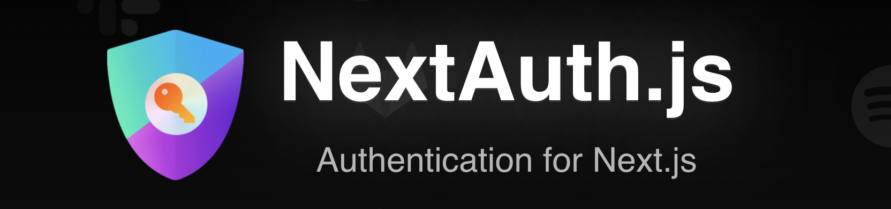
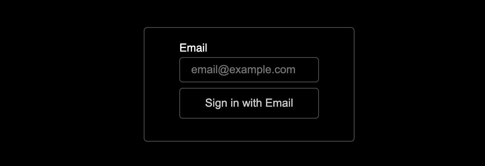
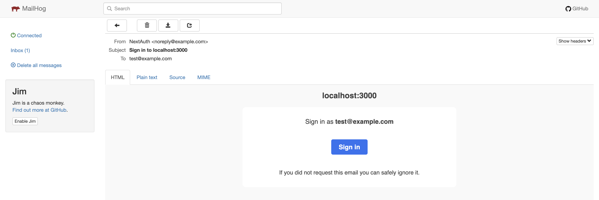

Improve your NextAuth.js app local development experience with a dockerized SMTP server
Jan 16, 2022 · 3 minute read · CommentsDevelopment

NextAuth.js makes it shockingly easy to add authentication to Next.js apps. It’s free, open source, it lets you own your data and it supports a ton of identity providers, including one time passwords or “magic links”.
Working with NextAuth.js is trivial, it sounds too good to be true!
Of course, there is a catch…
The developer experience worsens because you now need a network connection to log into your locally running app, even if your database is also local. Bye bye to chill sessions of working on the train.
You can fix that with a local SMTP server! Let’s see how we can set it up. I will be showing code samples, but you can find a full working example of this post here.
🔐 Set up NextAuth.js with the EmailProvider
Let’s assume you already have a Next.js application. If you don’t have NextAuth.js configured, the first thing is to follow the tutorial on their landing page. Then, set the EmailProvider in /pages/api/auth/[...nextauth].js.
import NextAuth from 'next-auth';
import EmailProvider from 'next-auth/providers/email';
export default NextAuth({
providers: [
EmailProvider({
server: {
host: process.env.EMAIL_SERVER_HOST,
port: process.env.EMAIL_SERVER_PORT,
auth: {
user: process.env.EMAIL_SERVER_USER,
pass: process.env.EMAIL_SERVER_PASSWORD,
},
},
from: 'NextAuth <noreply@example.com>',
}),
]
});
For the EmailProvider to work, you also need to install the nodemailer package.
$ yarn add nodemailer
Remember that you also need to provide an Adapter to NextAuth.js so that it can persist data. In my example, I use the PrismaAdapter.
📬 Set up your local SMTP server
We’re going to use MailHog, an open source email testing tool that comes with an SMTP server you can run locally. Conveniently, they have a zero config Docker image!
Create a docker-compose.yaml file or update your existing one and define the MailHog service.
Using Docker Compose to run your database locally is a pretty good idea! In my example repo I went for a containerised PostgreSQL database.
version: '3.9'
services:
mailhog:
image: mailhog/mailhog
logging:
driver: 'none' # disable saving logs
ports:
- 1025:1025 # smtp server
- 8025:8025 # web ui
Add a couple of convenience scripts to your package.json.
{
"scripts": {
"docker:up": "docker compose up -d",
"docker:down": "docker compose down"
}
}
Edit your local .env file to configure the NextAuth.js EmailProvider. Leave everything as below.
EMAIL_SERVER_HOST=localhost
EMAIL_SERVER_PORT=1025
EMAIL_SERVER_USER=email-user
EMAIL_SERVER_PASSWORD=email-pass
💻 Local workflow
Bring up your containers and start the local development server.
$ yarn docker:up && yarn dev
Go to https://localhost:3000, click Sign in and enter your email.

Now you can open http://localhost:8025/ and see the email with the magic link.

🎉 That’s it, you can now manage authentication in your app and work locally without an internet connection.